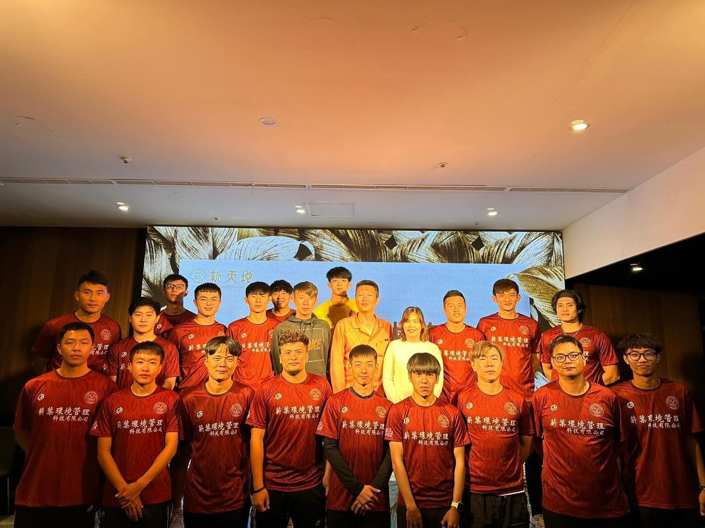
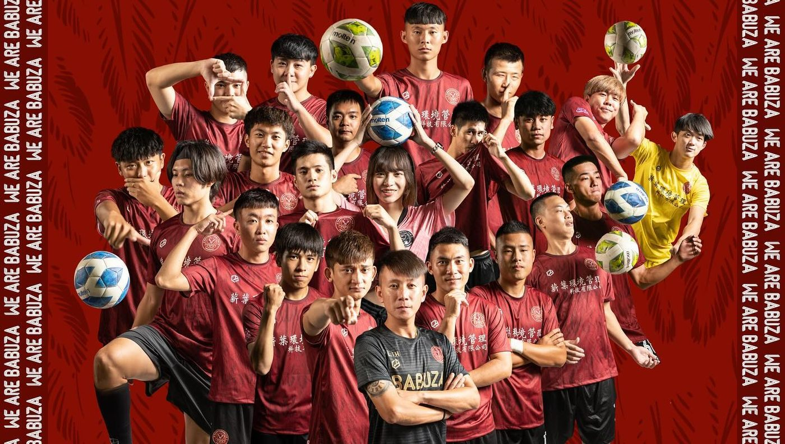

01我的故事
我們是一個為了彰化足球而努力的俱樂部
半線蒼鷹足球俱樂部自2019成立迄今已經邁入第六年，由創辦人張竣傑所創立，以彰化、大肚、台中做為俱樂部球員發展的核心，起初創立於2019年時，是由彰化精誠中學畢業校友為主體，從休閒性質轉為競技後，開始招募來自台中地區足球好手，讓來自中部的選手有機會能夠繼續從事足球運動。


推薦理由
(一)發展彰化足球，協會定期於暑假辦理彰化縣社區足球節。
(二)與地方連結，協會下有兩個國小成為協會及球隊青訓夥伴。
(三)為女性選手拓展出路，在兩個國小推行木蘭球隊並定期參加縣市賽事。
請大家在足球推動的路上一起支持我們 !